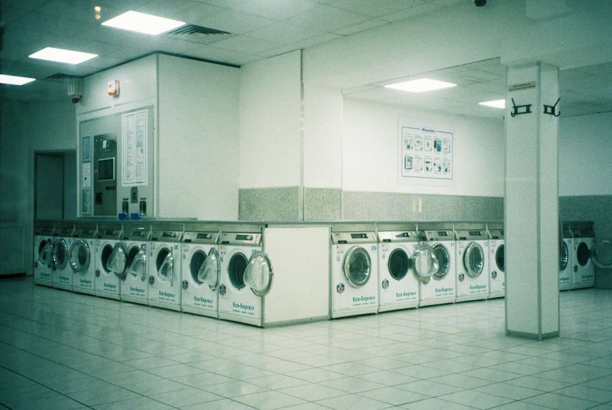
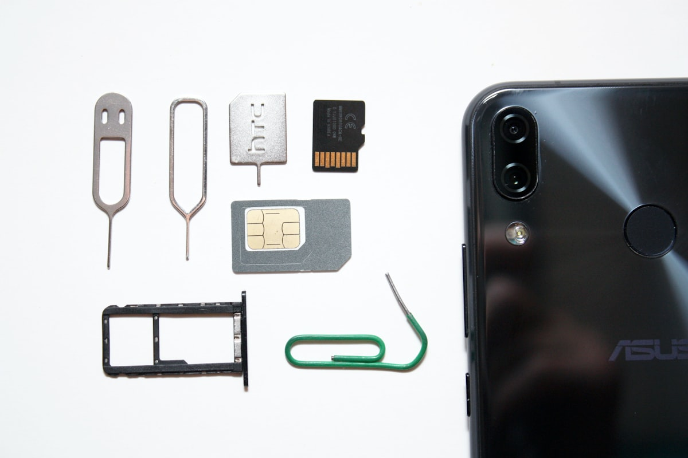

新着記事

渡航後の実務
ワーホリ中の「日本のクレカ払い」問題、Wiseで解決している話
銀行送金との違いと、実際に日本のクレカ払いに使っている実体験。

現地生活グッズ
渡航後の生活で地味に助かった消耗品。水筒・変圧器・日本の味噌汁
水道水がそのまま飲める話、変圧器の汎用性、ホームシック対策の食品。

現地での収入
Uber Eats配達で地味に必須な持ち物。モバイルバッテリー・手袋・ライト
GPS常時起動でのバッテリー消費、NSW州のライト・反射材の法律要件など。

現地生活グッズ
洗濯ネットが地味に必須な理由。シェアハウス・コインランドリー特有の事情
大型の共用洗濯機で起きやすい紛失・色移りを防ぐための実務ネタ。

現地生活グッズ
炊飯器、日本から持っていくべきか?電圧230Vと現地調達の判断基準
日本の炊飯器をそのまま持っていくと危険な理由と、持参/現地調達の判断基準。

現地での収入
ワーホリでUber Eats配達を始める前に知っておくこと(ABN・税金・罰金)
ABN取得・税金の扱い・NSW州の罰金ルールを整理。Uber Ridesが実質使えない理由も解説。
英語学習サービス
ワーホリ前後のオンライン英会話、目的別に選ばないと続かない理由
日常会話・IELTS対策・実務英語、目的別の選び方と続けるための現実的なポイント。
渡航後の実務
myGov登録とTFN(税番号)申請、働き始める前にやっておくべき理由
申請を後回しにすると、給与から最高税率で源泉徴収される仕組みを解説。
渡航後の実務
オーストラリアの銀行口座、渡航前オンライン申込→到着後にどう受け取るか
ランディングアカウントの仕組みと、到着後の本人確認までの流れ。

渡航前準備
ワーホリの海外旅行保険、普通の「旅行保険」でいいのか?選び方の注意点
ビザ条件としては任意でも、なぜ入るべきか。肉体労働系の仕事が補償対象外になりやすい落とし穴も解説。

渡航前準備
オーストラリアワーホリの持ち物リスト、「現地調達でいいもの」まで分けて整理
必ず持参・現地調達推奨・持って行かなくていいものの3段階で整理。

渡航後の実務
オーストラリアのワーホリ、eSIMは「30日制限」に注意。12ヶ月滞在で失敗しないSIMの選び方
旅行用eSIMは基本30日前後の短期プラン。myGov・銀行の2段階認証には豪州の電話番号が必要になるため、切り替えのタイミングを間違えると詰みます。実際の切り替え手順を解説。